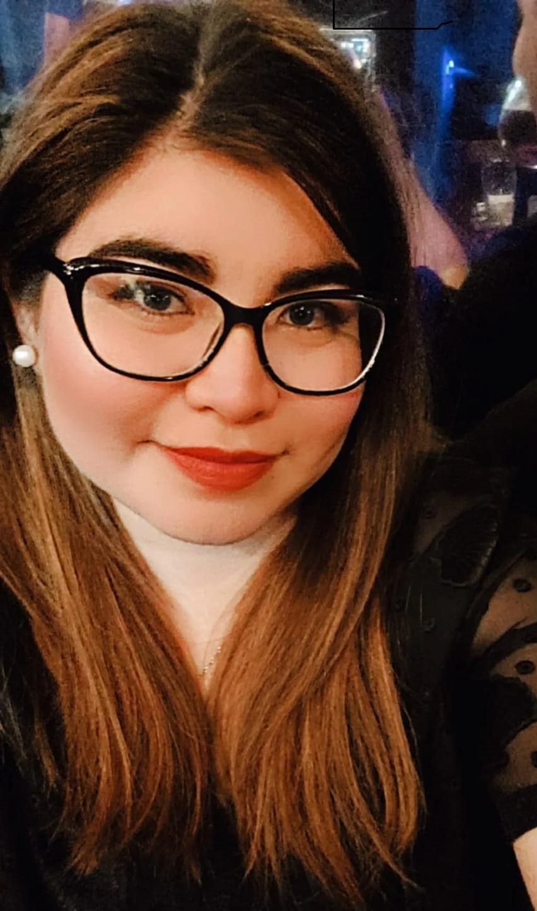

Priscila Estefania Soraire
Rondeau 3654,San Miguel de Tucuman,Tucuman(Argentina)
telefono:(381)6466000
Datos Generales
Fecha de nacimiento:
16/03/1994
Edad:
27 años
Dni:
38243308
Estado civil:
Soltera
Email:
pri_so@hotmail.com
Formacion Academica
Secundario completo
Inst Argentino Arabe 2006-2011
Operador de Pc
INI Computacion 2010-2011
Tango Gestion
INI Computacion 2011-2012
Experiencia Laboral
Atencion al cliente y cajera: Amapola Accesorios
Cajera en venta de indumentaria femenina
Vendedora Independiente de Ind femenina
Administrativa y cajera: DYL Amoblamientos
Telecobradora: Estudio Juridico Salas Crespo
Cajera en Hiper Libertad S.A
Habilidades
Puntual
Responsable
Rapida adaptacion al entorno laboral
Rapida adaptacion al entorno de trabajo
Hobbies
Ver peliculas
Salir a pasear
Bailar
Andar en Bici
Escuchar musica
Salir a conocer nuevos lugares
Propositos y Metas 2022
Me propuse a estudiar esta carrera porque hace mucho tiempo tenia anhelos de hacerla, pero debido al tiempo o trabajo que tenia en su momento no podia. Este nuevo año que comenzara queria que fuera diferente, aprender sobre esta hermosa carrera que la verdad me cautiva dia a dia con cada clase que veo y participo.
Mi meta es aprender todo lo mas que pueda sobre programacion, poder trabajar de ello, porque ademas que te da una libertad financiera unica, desde mi punto de vista. Voy a trabajar de lo que de verdad me gusta.
Tengo grandes espectativas ahora y hasta que termine, si asi Dios me lo permite esta carrera. Espectativas laborales como de poder salir de un trabajo que ya no disfruto y me extresa demasiado, para poder trabajar de lo que si me gusta.
Quiero crecer cada dia, aprendiendo cosas nuevas en cada paso que dé en el mundo de la programacion. :)